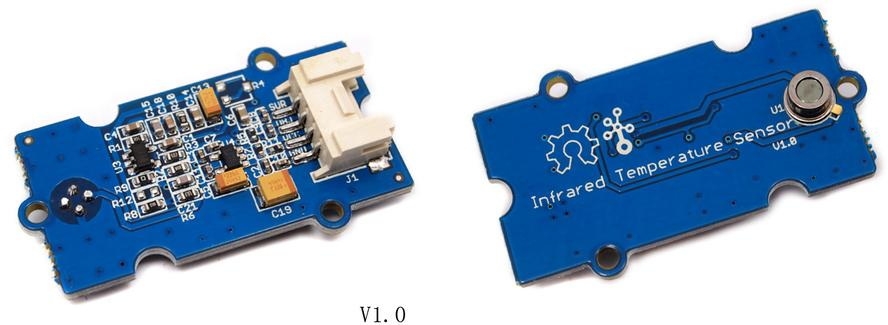
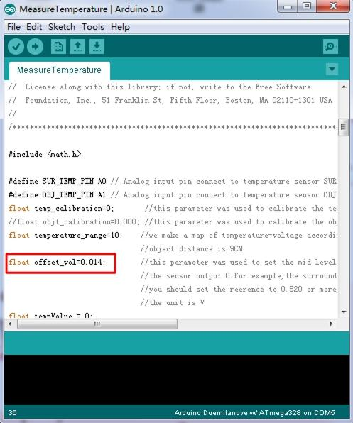
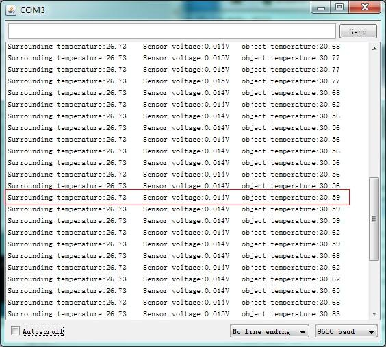
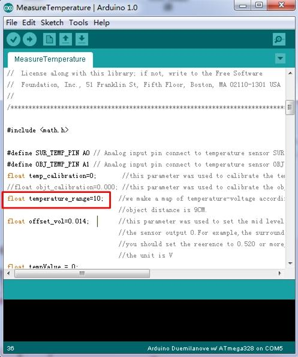
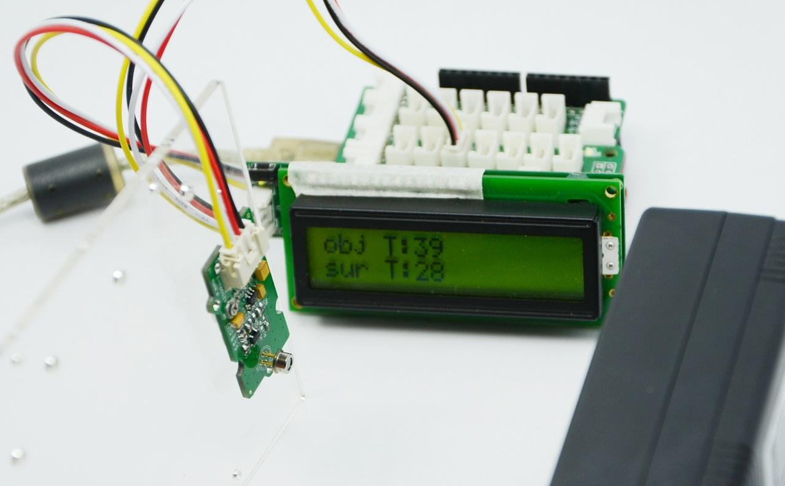
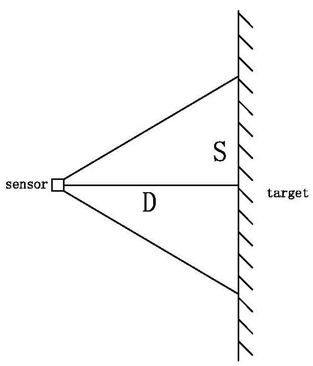

The Infrared temperature sensor is a non-contact temperature measure model. It is composed of 116 elements of thermocouple in series on a floating micro-membrane, the black
Surface of the sensor is good to absorb the incident thermal infrared radiation, which might trigger a voltage response at output. This sensor outputs an analog voltage (0~1.1V) according to target temperature.
Old version: v0.92.

The following sketch demonstrates a simple application of measure the measure the surrounding temperature around the sensor and the temperature of the target which is in front of the sensor. And print the result on the serial monitor.
Before measuring temperature, you need simple setting. Following the instruction below before your test and you will gain a accurately result.
Step 1: Regulate the sensor voltage
After uploading the demo program, make the sensor in normal environment more than 5 minutes that make the sensor temperature the same as surrounding temperature. Then open the serial monitor to check the voltage which the sensor output. Ideally, when the ambient temperature is equal to the temperature sensor, the infrared sensor (TP-538U) output is 0V.We should regulate the reference voltage which offset at 0.5V by hardware. As shown below, the sensor voltage is 0.014V, we just need to change the offset_vol value as0.014 which you obtain from the serial monitor in program.


Step 2:Regulate the sensor detected distance
According to our experiment, the sensor's nominal measure distance is 9CM, but we can’t ensure all sensor have the same character. So if you want to have accurate result, you need to regulate it with Ice and water mixture to measure the 0℃, and use boiled water to regulate the 100℃. After that, you can obtain the effective distance of the sensor.
The specific method for measuring is fill with ice and water in a dark container which has a flat surface. Waiting for the container drop to 0℃, keep the sensor 9CM between object, move the sensor forward or back and check the result, if output is 0℃, note down the distance value. The same method to check boiled water. When you gain a pair of value, make a deal with average calculation. You can begin to measure in a rated distance which you just obtained now.
Now we can measure the surrounding temperature around the sensor. The sensor is apply in a nominal distance, you can have a try in other distance, but the distance-temperature diagram neither sensor’s manufacturer nor we obtained, you can draw it follow the two instructions above. We reserve variable"temperature_range"in demo code. We assume that the target distance is 3 cm, the coefficient which you measured may be 5 more or less. Wish you have a fun try.

Advanced application example:

Note:
